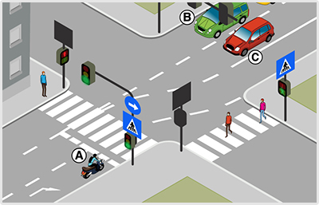
- 980. Ön az ’A’ jelű motorkerékpárt vezeti. Köteles-e az adott helyen irányjelzőjét használni? #703865
- Igen, jobbra jelezve, mivel bekanyarodik egy másik útra.
- Nem, mert a jobb szélső sávból másfelé nem haladhat.
- Nem, mert a többi jármű nem keresztezheti az útját.
- 981. Ön az ’A’ jelű motorkerékpárt vezeti. Melyik irányban folytathatja tovább az útját? #703866
- Csak jobbra.
- Amennyiben a belső sávban nem érkezik jármű, egyenesen is, és jobbra is.
- Mivel zöld fényjelzés irányítja a forgalmat, ezért a tábláktól függetlenül bármerre.
- 982. Az ’A’ jelű motorkerékpárral jobbra kanyarodva köteles-e elsőbbséget adni a gyalogosok részére? #703867
- Igen, de csak azon gyalogosok részére, akik azon az úton lévő kijelölt gyalogos-átkelőhelyen haladnak át, amelyik útra kanyarodni fog.
- Igen, a képen látható mindkét kijelölt gyalogos-átkelőhelyen érkező gyalogosok számára egyaránt.
- Nem, senkinek, mivel a motorkerékpár zöld fényjelzésre kezdi meg a kanyarodását.
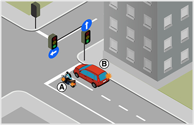
- 983. Ön az ’A’ jelű motorkerékpárt vezeti. Milyen irányban folytathatja az útját? #703915
- Csak balra.
- Csak egyenesen.
- Egyenesen is és balra is.
- 984. Ön az ’A’ jelű motorkerékpárt vezeti. Köteles-e az adott helyen az irányjelzőjét használni? #703916
- Igen, balra, mivel bekanyarodik egy másik útra.
- Nem, mert a bal oldali forgalmi sávból másfelé nem mehet.
- 985. A képen látható útkereszteződésben melyik jármű kanyarodhat jobbra? #703917
- Egyik sem.
- Csak a ’B’ jelű.
- Mindkettő.

- 986. Hányadikként haladhat át az útkereszteződésben a ’C’ jelű jármű? #704266
- Utolsóként.
- Elsőként.
- Másodikként.
- 987. Ön a ’C’ jelű járművet vezeti. Kell-e elsőbbséget adnia ebben a forgalmi helyzetben? #704267
- Igen, az ’A’ jelű gyalogos és a ’B’ jelű jármű részére egyaránt.
- Igen, de csak a ’B’ jelű jármű részére.
- Nem.
- Igen, de csak az ’A’ jelű gyalogos részére.
- 988. Az ábrán látható útkereszteződésben melyik a helyes áthaladási sorrend? #704268
- ’A’ - ’B’ - ’C’.
- ’B’ - ’A’ - ’C’.
- ’C’ - ’B’ - ’A’.
- ’A’ - ’C’ - ’B’.
- ’B’ - ’C’ - ’A’.
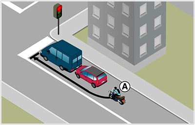
- 989. Motorkerékpárjával sávon belül kíván elhaladni a piros jelzés előtt álló járművek mellett. Használhat-e figyelmeztetésképpen hangjelzést? #704337
- Csak balesetveszély esetében.
- Igen, a kikerülés közben szabad hangjelzést adni.
- Nem, motorkerékpárral lakott területen sosem szabad hangjelzést adni.
- 990. Van-e valamilyen feltétele annak, hogy az ’A’ jelű jármű a képen látható módon előre haladjon? #704338
- Igen, csak akkor haladhat előre, ha az előrehaladáshoz elegendő hely áll rendelkezésre.
- Igen, az autósoknak egyértelműen jelezniük kell, hogy a motorost előre engedik.
- Nincs, mert az autósok mindig elegendő helyet biztosítanak a motorosok számára.
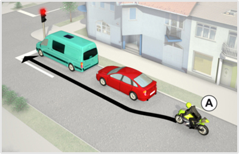
- 991. Van-e valamilyen feltétele annak, hogy az ’A’ jelű jármű a képen látható módon előre haladjon? #706938
- Igen, csak akkor haladhat előre, ha az előrehaladáshoz elegendő hely áll rendelkezésre.
- Igen, az autósoknak egyértelműen jelezniük kell, hogy a motorost előre engedik.
- Nincs, mert az autósok mindig elegendő helyet biztosítanak a motorosok számára.
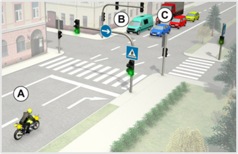
- 992. Ön az ’A’ jelű motorkerékpárt vezeti. Köteles-e az adott helyen irányjelzőjét használni? #706999
- Igen, jobbra jelezve, mivel bekanyarodik egy másik útra.
- Nem, mert a jobb szélső sávból másfelé nem haladhat.
- Nem, mert a többi jármű nem keresztezheti az útját.
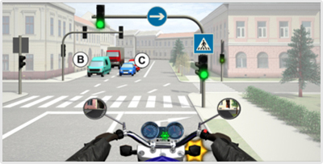
- 993. Ön a kormánnyal jelzett járművet vezeti. Köteles-e az adott helyen irányjelzőjét használni? #707000
- Igen, jobbra jelezve, mivel bekanyarodik egy másik útra.
- Nem, mert a jobb szélső sávból másfelé nem haladhat.
- Nem, mert a többi jármű nem keresztezheti az útját.
- 994. Ön az ’A’ jelű motorkerékpárt vezeti. Melyik irányban folytathatja tovább az útját? #707001
- Csak jobbra.
- Amennyiben a belső sávban nem érkezik jármű, egyenesen is, és jobbra is.
- Mivel zöld fényjelzés irányítja a forgalmat, ezért a tábláktól függetlenül bármerre.
- 995. Ön a kormánnyal jelzett járművet vezeti. Melyik irányban folytathatja tovább az útját? #707002
- Csak jobbra.
- Amennyiben a belső sávban nem érkezik jármű, egyenesen is, és jobbra is.
- Mivel zöld fényjelzés irányítja a forgalmat, ezért a tábláktól függetlenül bármerre.
- 996. Az ’A’ jelű motorkerékpárral jobbra kanyarodva köteles-e elsőbbséget adni a gyalogosok részére? #707003
- Igen, de csak azon gyalogosok részére, akik azon az úton lévő kijelölt gyalogos-átkelőhelyen haladnak át, amelyik útra kanyarodni fog.
- Igen, a képen látható mindkét kijelölt gyalogos-átkelőhelyen érkező gyalogosok számára egyaránt.
- Nem, senkinek, mivel a motorkerékpár zöld fényjelzésre kezdi meg a kanyarodását.
- 997. Ön a kormánnyal jelzett járművel jobbra kanyarodva köteles-e elsőbbséget adni a gyalogosok részére? #707004
- Igen, de csak azon gyalogosok részére, akik azon az úton lévő kijelölt gyalogos-átkelőhelyen haladnak át, amelyik útra kanyarodni fog.
- Igen, a képen látható mindkét kijelölt gyalogos-átkelőhelyen érkező gyalogosok számára egyaránt.
- Nem, senkinek, mivel a motorkerékpár zöld fényjelzésre kezdi meg a kanyarodását.
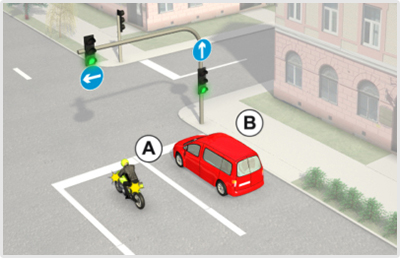
- 998. Ön az ’A’ jelű motorkerékpárt vezeti. Milyen irányban folytathatja az útját? #707026
- Csak balra.
- Csak egyenesen.
- Egyenesen is és balra is.
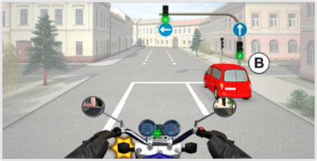
- 999. Ön a kormánykerékkel jelzett járművet vezeti. Milyen irányban folytathatja az útját? #707027
- Csak balra.
- Csak egyenesen.
- Egyenesen is és balra is.
- 1000. Ön az ’A’ jelű motorkerékpárt vezeti. Köteles-e az adott helyen az irányjelzőjét használni? #707028
- Igen, balra, mivel bekanyarodik egy másik útra.
- Nem, mert a bal oldali forgalmi sávból másfelé nem mehet.
- 1001. Ön a kormánykerékkel jelzett járművet vezeti. Köteles-e az adott helyen az irányjelzőjét használni? #707029
- Igen, balra, mivel bekanyarodik egy másik útra.
- Nem, mert a bal oldali forgalmi sávból másfelé nem mehet.
- 1002. A képen látható útkereszteződésben melyik jármű kanyarodhat jobbra? #707030
- Egyik sem.
- Csak a ’B’ jelű.
- Mindkettő.

- 1003. Hányadikként haladhat át az útkereszteződésben a ’C’ jelű jármű? #707348
- Utolsóként.
- Elsőként.
- Másodikként.
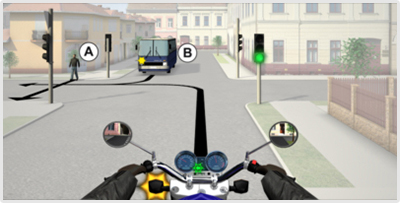
- 1004. Hányadikként haladhat át az útkereszteződésben a kormánnyal jelzett járművel? #707349
- Utolsóként.
- Elsőként.
- Másodikként.
- 1005. Ön a ’C’ jelű járművet vezeti. Kell-e elsőbbséget adnia ebben a forgalmi helyzetben? #707350
- Igen, az ’A’ jelű gyalogos és a ’B’ jelű jármű részére egyaránt.
- Igen, de csak a ’B’ jelű jármű részére.
- Nem.
- Igen, de csak az ’A’ jelű gyalogos részére.
- 1006. Ön a kormánnyal jelzett járművet vezeti. Kell-e elsőbbséget adnia ebben a forgalmi helyzetben? #707351
- Igen, az ’A’ jelű gyalogos és a ’B’ jelű jármű részére egyaránt.
- Igen, de csak a ’B’ jelű jármű részére.
- Nem.
- Igen, de csak az ’A’ jelű gyalogos részére.
- 1007. Az ábrán látható útkereszteződésben melyik a helyes áthaladási sorrend? #707352
- ’A’ - ’B’ - ’C’.
- ’B’ - ’A’ - ’C’.
- ’C’ - ’B’ - ’A’.
- ’A’ - ’C’ - ’B’.
- ’B’ - ’C’ - ’A’.
- 1008. Ön járművezetőként az alábbi forgalmi helyzetet látja. Határozza meg a helyes áthaladási sorrendet! #707353
- ’A’ - ’B’ - ’Ön’.
- ’B’ - ’A’ - ’Ön’.
- ’Ön’ - ’B’ - ’A’.
- ’A’ - ’Ön’ - ’B’.
- ’B’ - ’Ön’ - ’A’.
- 1009. Motorkerékpárjával sávon belül kíván elhaladni a piros jelzés előtt álló járművek mellett. Használhat-e figyelmeztetésképpen hangjelzést? #707466
- Csak balesetveszély esetében.
- Igen, a kikerülés közben szabad hangjelzést adni.
- Nem, motorkerékpárral lakott területen sosem szabad hangjelzést adni.
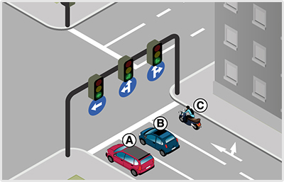
- 1010. A képen látható útkereszteződésben melyik jármű haladhat tovább egyenesen? #714779
- Csak a ’C’ és a ’B’ jelű.
- Csak a ’B’ jelű.
- Mindhárom jármű.
- 1011. Szabályosan közlekedik a képen látható ’A’ jelű motorkerékpáros? #715995
- Igen.
- Nem.
- 1012. Átlépheti-e az ’A’ jelű motorkerékpáros előre haladás közben a záróvonalat? #715996
- Nem.
- Igen.
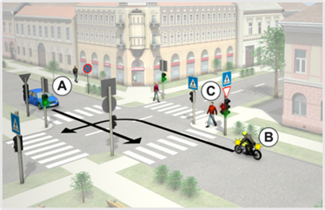
- 1013. Ön a ’B’ jelű motorkerékpárral az útkereszteződésben balra kíván bekanyarodni. Kinek a részére kell elsőbbséget adnia? #722295
- Csak az ’A’ jelű személygépkocsi részére.
- Csak az átkelésre váró ’C’ jelű gyalogos részére.
- Mind az ’A’ jelű személygépkocsi részére, mind pedig az átkelésre váró ’C’ jelű gyalogos részére.
- 1014. Ön a ’B’ jelű motorkerékpárt vezeti. Köteles-e irányjelzőt használni, ha az útkereszteződésben balra kíván bekanyarodni? #722296
- Igen, minden esetben.
- Nem, hiszen zöld jelzésnél nem kell irányjelzőt használni.
- Nem, mert az ’A’ jelű személygépkocsi sem használ irányjelzőt.
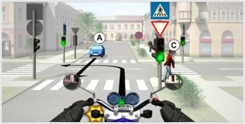
- 1015. Ön a kormánnyal jelzett járművel az útkereszteződésben balra kíván bekanyarodni. Kinek a részére kell elsőbbséget adnia? #722315
- Csak az ’A’ jelű személygépkocsi részére.
- Csak az átkelésre váró ’C’ jelű gyalogos részére.
- Mind az ’A’ jelű személygépkocsi részére, mind pedig az átkelésre váró ’C’ jelű gyalogos részére.
- 1016. Ön a kormánnyal jelzett járművet vezeti. Köteles-e irányjelzőt használni, ha az útkereszteződésben balra kíván bekanyarodni? #722316
- Igen, minden esetben.
- Nem, hiszen zöld jelzésnél nem kell irányjelzőt használni.
- Nem, mert az ’A’ jelű személygépkocsi sem használ irányjelzőt.